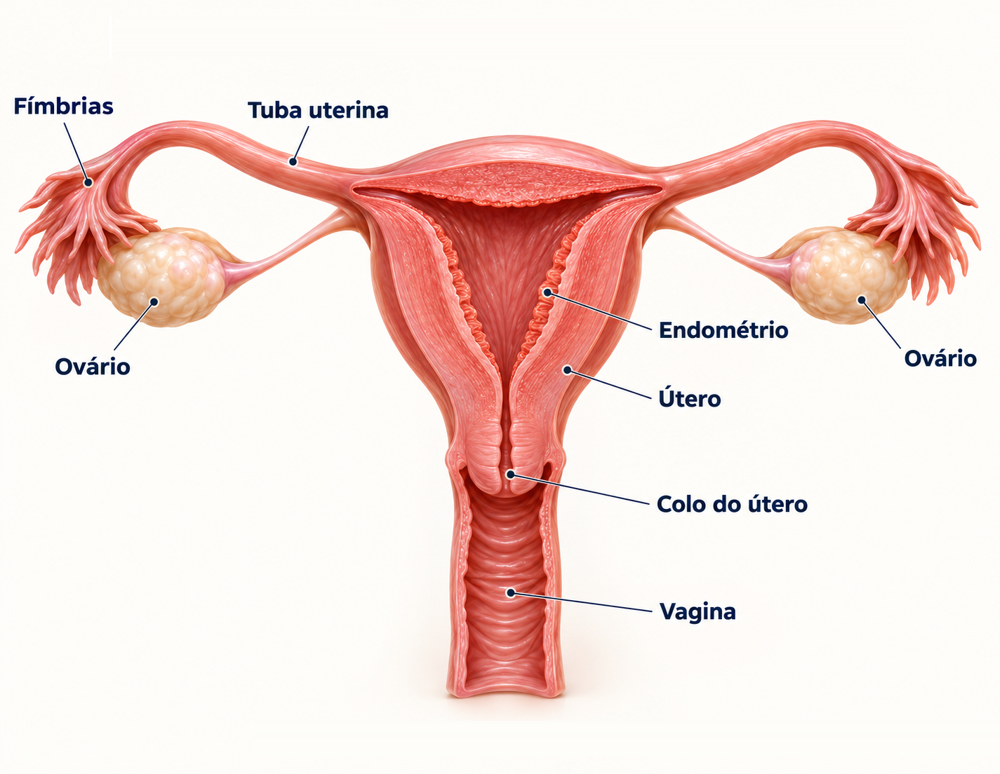
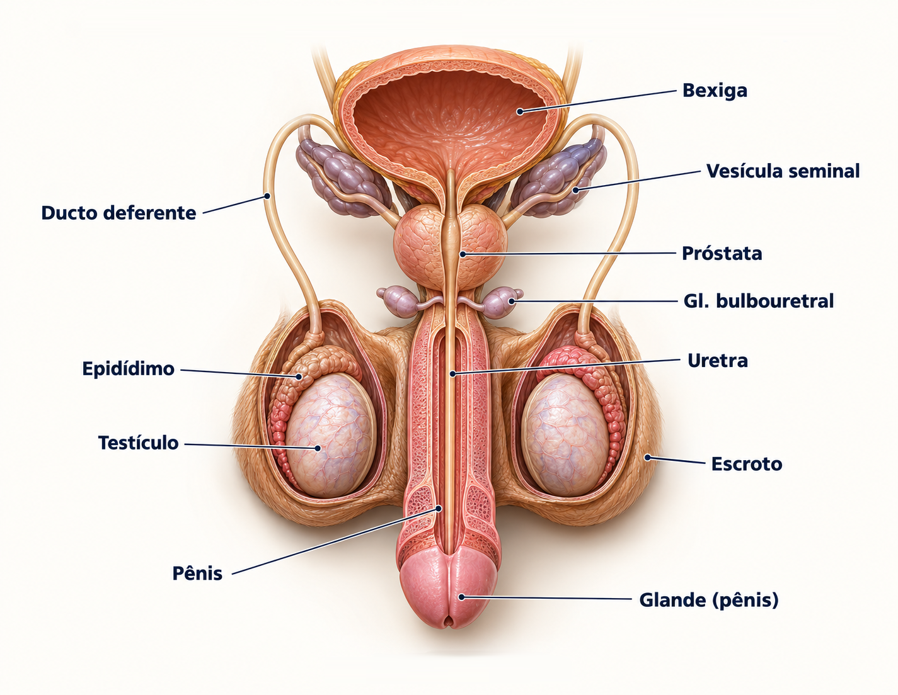
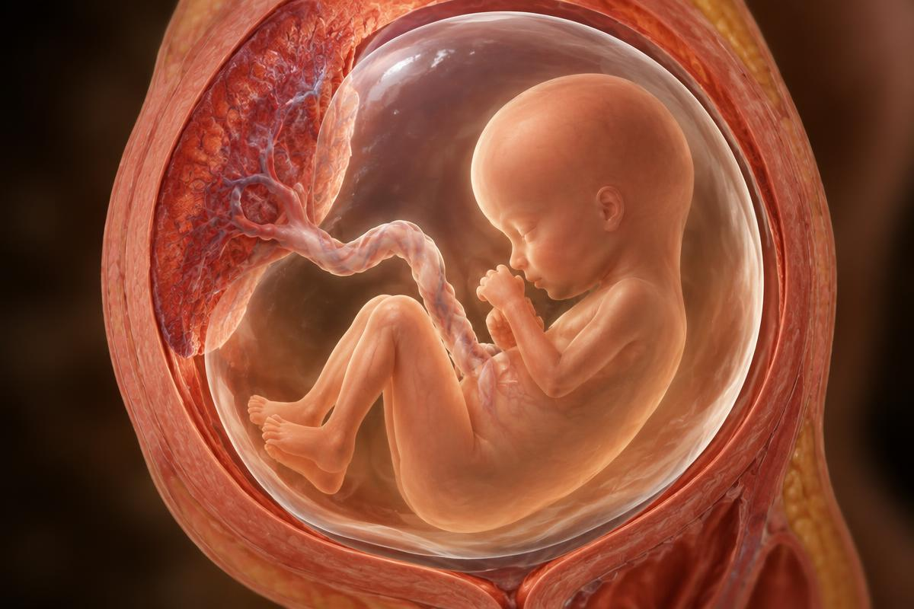

Corpo, mente, afeto e propósito. Uma edição especial que responde, com ciência e com a Bíblia, as dúvidas sobre sexualidade humana.
A sexualidade humana é a dimensão da pessoa que envolve o fato de sermos criados homem ou mulher. Ela não se resume ao ato sexual: inclui o corpo e seus órgãos, os hormônios, os sentimentos, a forma como nos relacionamos, a afetividade, a identidade, os valores e a espiritualidade.
A Organização Mundial da Saúde descreve a sexualidade como um aspecto central do ser humano ao longo de toda a vida, influenciado por fatores biológicos, psicológicos, sociais, culturais, éticos e religiosos. Ela se manifesta desde a infância (no jeito de nos vermos e de nos relacionarmos) até a velhice.
Em resumo: sexualidade é parte de quem somos — e, por isso, merece ser compreendida com informação correta, respeito e responsabilidade.
Sexualidade também é convivência, amizade e respeito mútuo.
Corpo, órgãos, hormônios e reprodução.
Emoções, autoestima, desejos e autoimagem.
Relacionamentos, cultura, família e amizades.
Valores, propósito e o plano de Deus para a vida.
No plano original, a intimidade sexual é um presente para o casamento.
A Bíblia apresenta a sexualidade como criação de Deus, e não como algo sujo ou vergonhoso. “Criou Deus o homem à sua imagem… homem e mulher os criou” (Gênesis 1:27), e “viu Deus tudo quanto tinha feito, e eis que era muito bom” (Gn 1:31).
O modelo divino é a união entre um homem e uma mulher, num compromisso de amor exclusivo, fiel e permanente — o casamento: “deixa o homem pai e mãe e se une à sua mulher, tornando-se os dois uma só carne” (Gn 2:24; Mateus 19:4-6).
Dentro desse pacto, a sexualidade tem três propósitos: união (intimidade e companheirismo), procriação (“sede fecundos e multiplicai-vos”, Gn 1:28) e prazer/alegria mútuos (Provérbios 5:18-19; Cântico dos Cânticos). Fora desse contexto, a Bíblia orienta a fugir da imoralidade (1 Coríntios 6:18-20), lembrando que nosso corpo é templo do Espírito Santo.
Sexo biológico é o conjunto de características físicas que classificam um ser humano como masculino ou feminino: os cromossomos sexuais, as gônadas (testículos ou ovários), os hormônios predominantes e os órgãos genitais internos e externos.
Existem dois tipos de sexo biológico: masculino (cromossomos XY, testículos, predominância de testosterona) e feminino (cromossomos XX, ovários, predominância de estrogênio e progesterona).
O sexo é definido no momento da fecundação: o óvulo sempre carrega um cromossomo X; o espermatozoide pode carregar X ou Y. Se for X, o bebê será XX (menina); se for Y, será XY (menino). O gene SRY, no cromossomo Y, ativa a formação dos testículos por volta da 7ª semana de gestação.
Existem raras condições médicas chamadas Diferenças do Desenvolvimento Sexual (DDS), em que há variações cromossômicas, hormonais ou anatômicas (por exemplo, síndrome de Turner — X0 — ou de Klinefelter — XXY). Elas são acompanhadas por médicos e não constituem um “terceiro sexo”.
Ovários · útero · tubas uterinas · vagina · vulva.
Hormônios: estrogênio e progesterona.
Testículos · epidídimos · ductos deferentes · próstata · pênis.
Hormônio principal:
testosterona.
Conhecer o próprio corpo é cuidar dele. Durante a aula, o instrutor apresenta desenhos ou figuras; aqui está o guia de cada órgão e sua função.

| Órgão | Interno / Externo | Função |
|---|---|---|
| Ovários | Interno | Par de glândulas que produzem os óvulos e os hormônios estrogênio e progesterona. |
| Tubas uterinas (trompas de Falópio) | Interno | Captam o óvulo liberado e o conduzem ao útero; é nelas que normalmente ocorre a fecundação. |
| Útero | Interno | Órgão muscular que abriga e nutre o bebê durante a gravidez. Seu revestimento (endométrio) descama na menstruação. |
| Colo do útero (cérvix) | Interno | Parte inferior do útero, que se comunica com a vagina; dilata-se no parto. |
| Vagina | Interno | Canal que liga o útero ao exterior; saída do fluxo menstrual, canal do parto e órgão da relação sexual. |
| Vulva: grandes e pequenos lábios | Externo | Dobras de pele que protegem as aberturas da vagina e da uretra. |
| Clitóris | Externo | Órgão muito sensível, ligado à resposta de prazer sexual. |
| Monte púbico | Externo | Camada de gordura sobre o osso púbico, coberta por pelos após a puberdade; proteção. |
| Hímen | Externo | Membrana fina na entrada da vagina, com formato variável de pessoa para pessoa. |
| Mamas (órgão anexo) | Externo | Glândulas que produzem leite para amamentar o bebê. |

| Órgão | Interno / Externo | Função |
|---|---|---|
| Testículos | Externo (dentro do escroto) | Produzem os espermatozoides e a testosterona. |
| Escroto (bolsa escrotal) | Externo | Bolsa de pele que protege os testículos e mantém sua temperatura cerca de 2 °C abaixo da do corpo. |
| Pênis | Externo | Órgão da micção e da relação sexual; conduz urina e sêmen pela uretra. A glande é coberta pelo prepúcio. |
| Epidídimo | Interno | Tubo enrolado sobre cada testículo onde os espermatozoides amadurecem e ficam armazenados. |
| Ductos deferentes | Interno | Transportam os espermatozoides do epidídimo até a uretra. |
| Vesículas seminais | Interno | Produzem líquido rico em frutose que nutre os espermatozoides. |
| Próstata | Interno | Produz líquido que protege e dá mobilidade aos espermatozoides; compõe o sêmen. |
| Glândulas bulbouretrais | Interno | Liberam um líquido que lubrifica e neutraliza a acidez da uretra. |
| Uretra | Interno | Canal comum para a saída da urina e do sêmen (nunca ao mesmo tempo). |
Observação: embora os testículos fiquem fora da cavidade abdominal, muitos livros os classificam como gônadas (órgãos internos do sistema). O escroto e o pênis são os órgãos genitais externos.
Puberdade é o período de mudanças físicas em que o corpo da criança amadurece e se torna capaz de reproduzir. Ela faz parte da adolescência, que também envolve mudanças emocionais e sociais.
Tudo começa no cérebro: o hipotálamo e a hipófise liberam hormônios (LH e FSH) que estimulam os ovários e testículos a produzirem estrogênio ou testosterona. Nas meninas, a puberdade costuma começar entre 8 e 13 anos; nos meninos, entre 9 e 14 anos. Cada pessoa tem seu próprio ritmo — e isso é normal.
É a descamação mensal do endométrio (revestimento interno do útero) quando não há gravidez, eliminada pela vagina na forma de sangue. Dura em média de 3 a 7 dias e o ciclo completo tem cerca de 28 dias (variando de 21 a 35).
A primeira menstruação, a menarca, ocorre geralmente entre 10 e 15 anos (média de 12 anos no Brasil). Ela termina na menopausa, por volta dos 45 a 55 anos, quando os ovários deixam de liberar óvulos.
É a ejaculação involuntária durante o sono, popularmente chamada de “sonho molhado”. É um processo natural, pelo qual o corpo elimina o excesso de sêmen. Começa na puberdade, geralmente entre 12 e 16 anos, é mais frequente na adolescência e diminui com a idade adulta — podendo ocorrer ocasionalmente ao longo de toda a vida. Não é doença nem pecado.
Hábitos simples previnem infecções e desconfortos.
A região genital é quente, úmida e coberta, o ambiente ideal para fungos e bactérias. A higiene correta previne mau cheiro, assaduras, micoses, candidíase, infecções urinárias e outras doenças, além de trazer conforto e autoestima.
Gravidez (ou gestação) é o período em que um novo ser humano se desenvolve dentro do útero da mãe, desde a fecundação até o parto.
Na relação sexual, milhões de espermatozoides são depositados na vagina e nadam pelo útero até as tubas uterinas. Se encontrarem um óvulo, apenas um consegue penetrá-lo: é a fecundação, que forma o zigoto, com 46 cromossomos (23 do pai e 23 da mãe). O zigoto se divide enquanto desce pela tuba e, cerca de 6 a 7 dias depois, implanta-se no endométrio (nidação). Forma-se a placenta e o cordão umbilical, que levam oxigênio e nutrientes ao bebê.
Cerca de 40 semanas (aproximadamente 9 meses), contadas a partir do primeiro dia da última menstruação, divididas em três trimestres. É chamado de embrião até a 8ª semana e de feto depois disso.

O coração do embrião já está batendo.
Todos os órgãos estão formados; o bebê tem ~6 cm.
A mãe sente os movimentos; o bebê já escuta sons.
Bebê pronto para nascer, com cerca de 50 cm e 3 kg.
Aborto é a interrupção da gravidez antes que o feto seja capaz de sobreviver fora do útero (até cerca de 20–22 semanas).
Espontâneo (natural): perda da gestação sem intervenção, geralmente por problemas
genéticos ou de saúde — atinge 10 a 20% das gestações conhecidas.
Provocado (induzido):
interrupção intencional, por medicamentos ou procedimentos.
Hemorragias, infecções, perfuração do útero, lesões no colo uterino, infertilidade futura e, em procedimentos clandestinos, risco real de morte. O aborto inseguro é uma das principais causas de mortalidade materna.
Culpa, tristeza, ansiedade, depressão, baixa autoestima, distúrbios do sono e dificuldades nos relacionamentos — às vezes surgindo anos depois. Quem passou por isso precisa de acolhimento, não de julgamento.
O aborto é crime (Código Penal, arts. 124 a 128), exceto em três situações: 1) risco de vida para a gestante; 2) gravidez resultante de estupro; 3) feto anencéfalo (decisão do STF, ADPF 54, 2012). Nesses casos é realizado gratuitamente pelo SUS.
A Igreja Adventista valoriza a vida humana como dom de Deus desde a concepção (Salmo 139:13-16) e não apoia o aborto por conveniência, reconhecendo situações excepcionais e graves — como risco à vida da mãe, anomalias incompatíveis com a vida ou gravidez por estupro — que exigem decisão consciente, acompanhada de oração e aconselhamento.
Abuso sexual é qualquer ato de natureza sexual imposto a alguém sem o seu consentimento ou com alguém que não tem idade ou condição de consentir — inclui toques, exposição a conteúdo pornográfico, exibicionismo, fotos íntimas, conversas sexuais pela internet e o próprio estupro. Na maioria dos casos, o agressor é alguém conhecido: parente, vizinho, amigo da família.
Sinais de alerta: alguém que pede segredo (“isso fica entre nós”), oferece presentes em troca de carinho, tenta ficar sozinho com você, faz brincadeiras ou toques nas partes íntimas, manda mensagens estranhas ou pede fotos. Mudanças bruscas de comportamento, medo de certa pessoa, isolamento, queda nas notas e regressão em crianças podem indicar que alguém está sendo abusado.
Como se proteger: seu corpo pertence a você — ninguém tem o direito de tocar suas partes íntimas. Aprenda a dizer NÃO, saia do lugar e conte a um adulto de confiança. Não existe “segredo bom” que envolva o corpo. Na internet, nunca envie fotos íntimas, não aceite encontros com desconhecidos e bloqueie quem insistir.
Por que não ficar calado? O silêncio protege apenas o agressor, que normalmente continua fazendo novas vítimas. Falar interrompe o abuso, permite tratamento médico e psicológico e responsabiliza o culpado. A culpa nunca é da vítima.
Também procure: pais ou responsáveis de confiança, professores, conselheiros e diretores do clube, pastor, médico ou psicólogo. Se a vítima for outra pessoa, acredite nela, acolha e ajude a denunciar.
ISTs são infecções causadas por vírus, bactérias, fungos ou protozoários, transmitidas principalmente por contato sexual (vaginal, anal ou oral) sem proteção, e algumas também pelo sangue ou da mãe para o bebê. O termo “IST” substituiu “DST” porque muitas pessoas têm a infecção sem apresentar sintomas.
Vírus da Imunodeficiência Humana. É um retrovírus que ataca os linfócitos T CD4, células de defesa do sistema imunológico, enfraquecendo o organismo.
Síndrome da Imunodeficiência Adquirida: é o estágio avançado da infecção pelo HIV, quando as defesas estão tão baixas (CD4 abaixo de 200) que surgem doenças oportunistas como tuberculose, pneumonias e certos cânceres. Ter HIV não é o mesmo que ter AIDS.
Não se pega por abraço, beijo no rosto, suor, lágrima, talheres, piscina, banheiro ou picada de inseto.
Entre 2 e 4 semanas após a infecção pode surgir a fase aguda, parecida com uma gripe (febre, manchas, ínguas). Depois vem uma fase assintomática que pode durar de 8 a 10 anos ou mais. Sem tratamento, então, aparecem os sintomas da AIDS. A janela imunológica (tempo para o exame detectar) é de cerca de 30 dias.
Teste rápido (resultado em 30 minutos, gratuito no SUS e nos CTAs), ELISA/imunoensaio, Western Blot ou imunoblot (confirmatório) e carga viral (PCR), que mede a quantidade de vírus no sangue. A contagem de CD4 avalia a imunidade.
Tomar a Terapia Antirretroviral (TARV) todos os dias, sem falhas; consultas e exames regulares; alimentação saudável, exercícios, sono, vacinas em dia; não fumar nem usar álcool/drogas; usar preservativo. Hoje o esquema inicial do SUS é tenofovir + lamivudina + dolutegravir, geralmente 2 comprimidos por dia em dose única (há esquemas de 1 comprimido). Os remédios são gratuitos.
| IST | Agente etiológico | Contágio | Sintomas | Tratamento |
|---|---|---|---|---|
| Sífilis | Bactéria Treponema pallidum | Sexual, sangue e mãe→bebê (sífilis congênita) | Ferida indolor (cancro duro), depois manchas na pele, palmas e plantas; na fase tardia lesa coração, nervos e cérebro | Sim — penicilina benzatina (Benzetacil) |
| Gonorreia | Bactéria Neisseria gonorrhoeae | Sexual e no parto | Ardência ao urinar, corrimento amarelado/purulento; muitas mulheres não têm sintomas | Sim — antibióticos (ceftriaxona) |
| HPV (condiloma) | Papilomavírus humano | Contato sexual e pele a pele | Verrugas genitais; tipos de alto risco causam câncer de colo do útero, ânus, pênis e garganta | Não há cura do vírus; trata-se as lesões. Vacina gratuita no SUS para 9 a 14 anos |
| Herpes genital | Vírus herpes simplex (HSV-2 e HSV-1) | Contato com lesões ou secreções | Bolhas dolorosas que viram feridas, ardor e coceira; reaparecem em crises | Sem cura; antivirais (aciclovir) controlam as crises |
| Hepatite B | Vírus da hepatite B (HBV) | Sexual, sangue, objetos cortantes, mãe→bebê | Cansaço, enjoo, pele e olhos amarelados; pode evoluir para cirrose e câncer de fígado | Antivirais controlam; vacina no SUS previne |
| Tricomoníase | Protozoário Trichomonas vaginalis | Sexual | Corrimento esverdeado com odor forte, coceira, ardência | Sim — metronidazol (casal) |
| Clamídia | Bactéria Chlamydia trachomatis | Sexual e no parto | Frequentemente sem sintomas; corrimento e dor; pode causar infertilidade | Sim — azitromicina ou doxiciclina |
Pais e adultos de confiança são as melhores fontes para tirar dúvidas.
Procure pessoas maduras, bem informadas e que te amam: pais ou responsáveis, médico (pediatra, ginecologista, urologista, hebiatra), psicólogo, pastor, conselheiro ou diretor do clube, professor de ciências e materiais confiáveis (livros cristãos e sites oficiais de saúde, como o do Ministério da Saúde).
Sentimento intenso de atração e encantamento por alguém, acompanhado de euforia, “frio na barriga” e pensamentos constantes na pessoa. É impulsionada por substâncias do cérebro como dopamina e adrenalina, e costuma ser passageira (de meses a cerca de 2 anos). É emoção — o amor é decisão e compromisso (1 Coríntios 13:4-7).
Fase de relacionamento em que duas pessoas se conhecem melhor, com exclusividade e compromisso, para avaliar se desejam se casar. É um tempo de amizade, conversa, diversão e crescimento, com o envolvimento da família.
Quando há qualquer forma de violência, desrespeito ou pressão sexual; quando os valores e objetivos de vida são incompatíveis; quando o relacionamento afasta você de Deus, da família e dos estudos; quando acabou o afeto ou quando você percebe que não se casaria com essa pessoa.
Ore e reflita com calma antes de decidir.
Converse pessoalmente (não por mensagem), em lugar tranquilo.
Seja honesto, claro e respeitoso, sem humilhar ou culpar.
Não exponha o outro nas redes; dê tempo e espaço para ambos.
Em casos de violência ou ameaça, termine com apoio de um adulto de confiança e, se necessário, peça ajuda às autoridades.